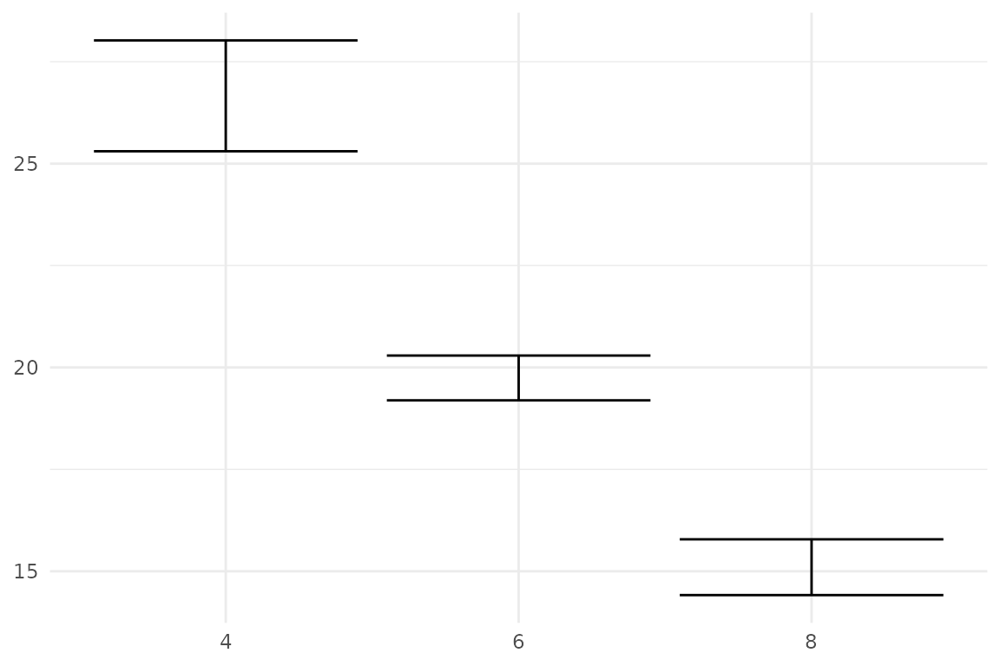
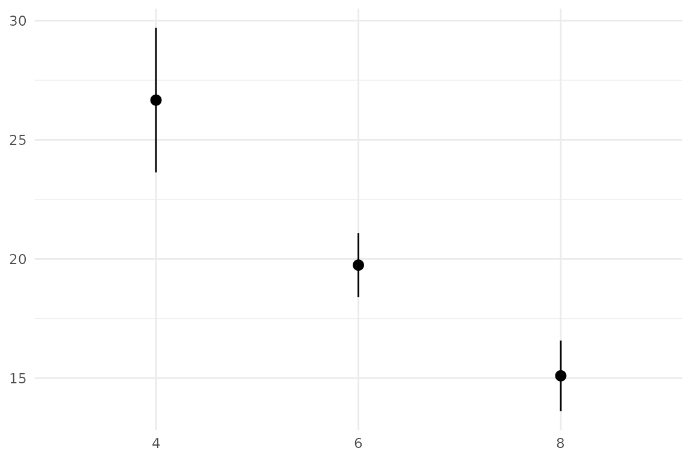
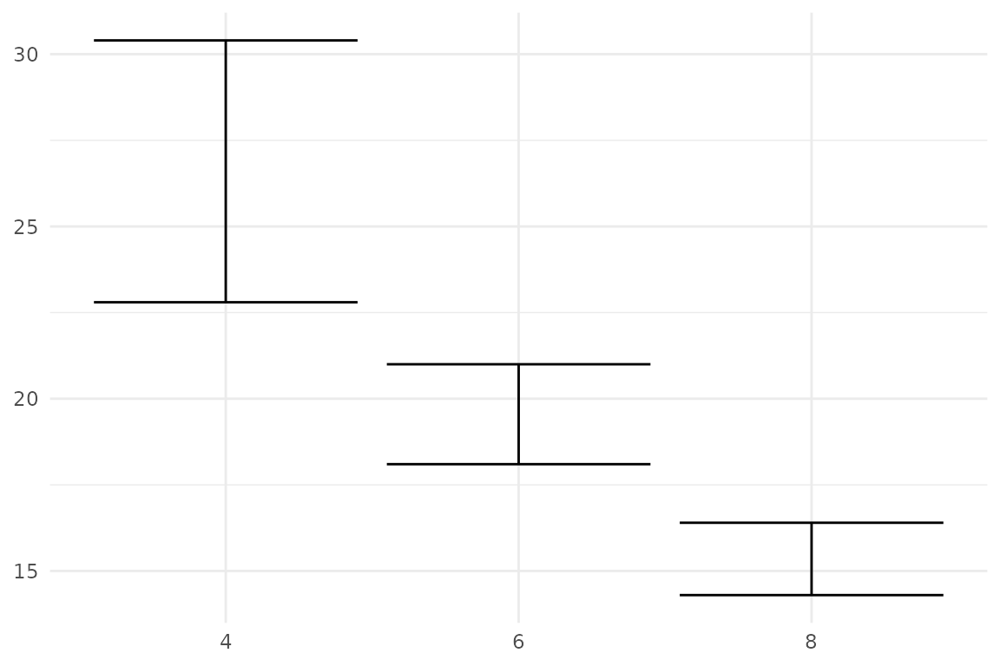
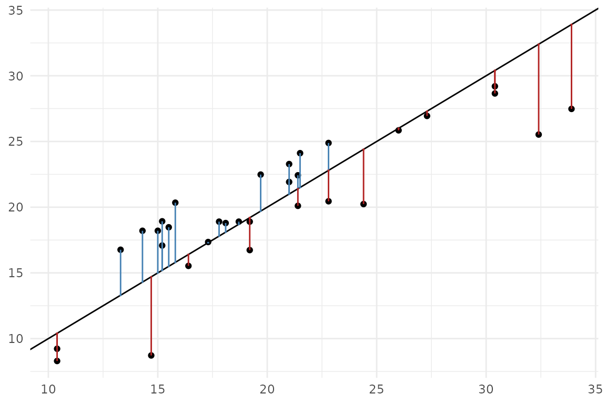

library(ggplot2)
library(ggerror)
set_theme(
theme_minimal() + theme(
plot.title = element_text(hjust = 0, family = "consolas", size = 12),
axis.title = element_blank()
))Version 1.0.0 adds two new features:
-
stat_error()computes error bounds directly from raw data. It follows ggplot2’sfun.datacontract, meaning it works with any summary function you pass in -mean_se,mean_ci, or a custom one (see details below). -
sign_aware = TRUEinterprets the sign of input values as direction. Positive and negative values are mapped toerror_posanderror_neg, respectively. This is useful when plotting residuals or any signed quantity where direction carries meaning.
stat_error():
Pass raw observations and let the stat compute the error. The default
is mean_se - mean with one standard error:
ggplot(mtcars, aes(factor(cyl), mpg)) +
stat_error()
mean_ci for a 95% confidence interval:
ggplot(mtcars, aes(factor(cyl), mpg)) +
stat_error(fun = "mean_ci", error_geom = "pointrange")
Both mean_ci and mean_se accept
na.rm as an argument. mean_ci also
accepts conf.int, default is 0.95.
Custom summary function
You can also pass a custom function following ggplot2’s
fun.data syntax — it takes a numeric vector and returns a
single-row data frame with columns y, ymin,
ymax:
iqr <- function(y, type = 6) {
data.frame(
y = median(y),
ymin = stats::quantile(y, 0.25, names = FALSE, type = type),
ymax = stats::quantile(y, 0.75, names = FALSE, type = type)
)
}
ggplot(mtcars, aes(factor(cyl), mpg)) +
stat_error(fun = iqr, type = 1)
You can pass an arbitrary number of arguments to
stat_error().
While geom_error uses stat = 'identity',
you could also pass stat = 'error', which is equivalent to
stat_error().
sign_aware: residuals as one-sided bars
I really love this usecase. Drawing sign-aware errors (with colours!) used to be a pain. Not anymore!
- First, let us fit a (dummy) model
model <- lm(mpg ~ wt, data = mtcars)
mt_model <- mtcars
mt_model$predicted <- fitted(model) # predicted values (y_hat)
mt_model$res <- resid(model) # raw distances (y-y_hat), some positive, some negative
ggplot(mt_model, aes(mpg,predicted)) +
geom_point() +
geom_abline(slope = 1, intercept = 0) +
geom_error(aes(error = res), sign_aware = TRUE, orientation = "x",
colour_pos = "firebrick", colour_neg = "steelblue")
*Since both axes are numeric, ggerror can’t infer the
orientation itself, so we have to pass it